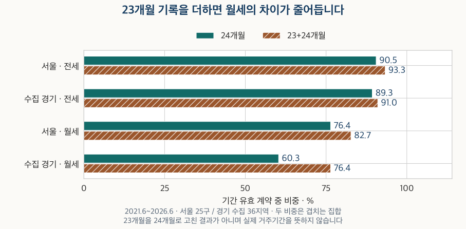
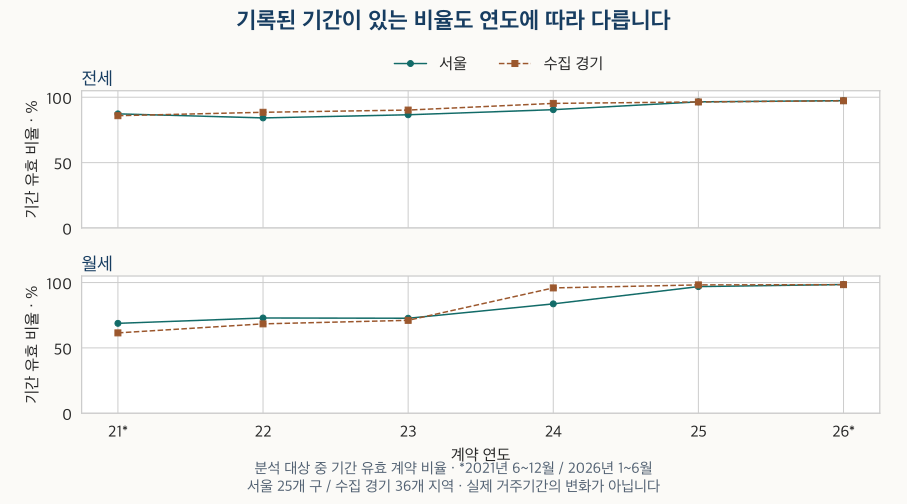

전세와 월세 계약 읽기 · 계약기간
전세 계약은 꼭 2년일까? 신고된 기간과 법적 보호의 차이
전세 1년 계약과 법적 보호를 구분하고, 서울·수집 경기의 신고 기간을 전세·월세·면적·신규·갱신별로 비교합니다. 23개월 기록과 기간 누락이 비중을 어떻게 바꾸는지도 확인하세요.
분석 기간 · 2021.6~2026.6 · 법령 확인 2026-10-12 | 자료 기준일 · 2026-10-04
전세 계약서를 1년으로 써도 되는지, 월세도 꼭 2년이어야 하는지 궁금할 수 있습니다. 계약서에 정한 기간, 신고 화면의 월 차이, 법이 보호하는 기간, 실제로 산 기간은 서로 다릅니다. 짧게 적힌 신고 기록만으로 계약이 위법하다거나 그날 나가야 한다고 판단할 수 없습니다.
전세 1년 계약이면 1년 뒤 나가야 하나요?
기간 숫자만으로 그렇게 결론 내릴 수 없습니다. 주택임대차보호법이 적용되는 임대차에서 기간을 정하지 않았거나 2년보다 짧게 정했다면 법은 그 기간을 2년으로 봅니다. 다만 임차인은 짧게 정한 기간이 유효하다고 주장할 수 있습니다. 임대인이 짧은 약정만으로 퇴거를 요구하는 문제와 임차인이 그 약정의 효력을 주장하는 문제를 구분해야 합니다. 주택임대차보호법 제4조 제1항
이 원칙은 주거용 건물의 임대차를 다루므로 전세와 월세라는 이름만으로 적용을 가르지 않습니다. 명백한 일시사용 임대차 등 법의 적용 예외도 있으며, 신고 기간이 짧다는 이유만으로 일시사용이라고 분류할 수는 없습니다. 계약 목적과 구체적인 사정을 확인해야 합니다.
| 상황 | 기간을 읽는 기준 | 함께 확인할 조건 |
|---|---|---|
| 기간 미정 또는 2년 미만 약정 | 법이 2년으로 보는 보호와 임차인의 짧은 약정 유효 주장이 함께 존재 | 누가 어떤 효력을 주장하는지, 법 적용 대상인지 |
| 묵시적 갱신 | 법정 요건을 충족하면 존속기간을 2년으로 봄 | 통지 시점과 갱신 제외 사유. 임차인의 해지 통지는 임대인이 받은 뒤 3개월이 지나 효력 발생 |
| 계약갱신요구권에 따른 갱신 | 요구권은 1회, 갱신되는 기간은 2년 | 요구 시기와 정당한 거절 사유. 임차인 해지에는 제6조의2를 준용 |
| 자료에 단순히 ‘갱신’으로 표시 | 표시만으로 묵시적 갱신이나 요구권 사용을 확정할 수 없음 | 실제 갱신 방식, 계약서와 통지·수령 기록 |
묵시적 갱신은 법이 정한 통지 기간과 예외 요건을 따릅니다. 합의로 새로 정한 계약을 곧바로 묵시적 갱신과 같은 해지 조건으로 읽어서는 안 됩니다. 보증금이 반환될 때까지의 임대차 관계 존속도 계약서 날짜만으로 사라지는 문제가 아닙니다. 현행 법 제2조·제4조·제6조~제6조의3·제11조를 실제 계약 조건과 함께 확인하세요. 아래 통계는 개별 계약의 법적 요건을 판정한 결과가 아닙니다.
신고 화면의 23개월은 2년보다 한 달 짧게 산 뜻인가요?
알 수 없습니다. 이번 자료의 기간은 시작 연월과 끝 연월이며 정확한 일자가 없습니다. 두 달의 차이를 계산했을 뿐, 계약서에 적힌 시작일·종료일이나 실제 입주·퇴거일을 복원하지 않았습니다.
가상 예시: 24.07~26.06은 월 차이로 23개월입니다. 실제 날짜가 2024년 7월 1일~2026년 6월 30일인지, 다른 날짜인지 이 표기만으로 알 수 없습니다. 24.07~26.07은 24개월입니다. 따라서 23개월을 임의로 24개월로 고치지 않고 두 구간을 따로 남겼습니다.
두 자리 연도는 2000을 더해 읽었습니다. 시작월이 없거나 끝이 앞선 기간, 같은 월에 시작·종료한 표기는 양수 기간 분포에서 제외했습니다. 같은 월은 ‘0일 계약’이라는 뜻이 아닙니다. 현재 보유한 자료에는 2011년 계약분에도 기간 값이 일부 있어, 2021년 6월을 이 항목이 처음 생긴 날이라고 부르지 않습니다. 이 글은 임대차 신고제가 시행된 시점에 맞춰 비교를 시작했습니다. 과거 계약의 값이 당시에도 공개돼 있었는지는 이 자료로 확인하지 못했습니다.
전세와 월세에서 24개월 기록은 얼마나 흔한가요?
전세에서는 두 지역 모두 기간 유효 계약의 약 9할이 24개월입니다. 월세에서는 이 비중이 낮고 지역 차이가 큽니다. 서울 25개 구와 경기의 수집 36지역에 있는 아파트 계약을 분석했으며, 경기 전체나 전국 임차가구의 분포는 아닙니다. 월세는 보증금 크기와 무관하게 월 차임이 양수인 계약입니다.
| 지역 · 계약 | 분석 대상 (건) | 기간 유효 (건) | 기간 유효 비율 | 24개월 비중 | 23+24개월 비중 |
|---|---|---|---|---|---|
| 서울 · 전세 | 676,229 | 607,802 | 89.9% | 90.5% | 93.3% |
| 수집 경기 · 전세 | 881,602 | 812,262 | 92.1% | 89.3% | 91.0% |
| 서울 · 월세 | 537,783 | 442,455 | 82.3% | 76.4% | 82.7% |
| 수집 경기 · 월세 | 701,035 | 578,412 | 82.5% | 60.3% | 76.4% |
‘분석 대상’은 금액·계약구분 등 정제 조건을 충족한 계약입니다. ‘기간 유효’는 시작·끝월이 해석되고 월 차이가 양수이며 기간 충돌이 없는 계약입니다. 기간 유효 비율의 분모는 분석 대상, 24개월·23+24개월 비중의 분모는 기간 유효 계약입니다.

| 지역 · 계약 | 1~11개월 | 12개월 | 13~22개월 | 23개월 | 24개월 | 25~35개월 | 36개월 이상 |
|---|---|---|---|---|---|---|---|
| 서울 · 전세 | 7,185 | 12,050 | 8,708 | 17,214 | 549,903 | 9,309 | 3,433 |
| 수집 경기 · 전세 | 12,820 | 29,555 | 14,783 | 13,237 | 725,634 | 11,690 | 4,543 |
| 서울 · 월세 | 9,794 | 41,734 | 6,684 | 28,163 | 337,837 | 16,625 | 1,618 |
| 수집 경기 · 월세 | 12,224 | 47,644 | 8,820 | 93,092 | 348,666 | 65,363 | 2,603 |
수집 경기 월세에는 23개월 기록이 93,092건 있습니다. 이를 합치면 24개월만 볼 때의 60.3%에서 23+24개월 76.4%로 바뀝니다. 신고 월의 끝을 적는 방식이 결과에 중요하다는 뜻이지, 모든 23개월 기록이 실제 2년 약정이었다는 증거는 아닙니다.
면적이나 신규·갱신을 나눠도 같나요?
같지 않습니다. 월세에서는 기타 면적보다 59형·84형의 24개월 비중이 높습니다. 59형은 전용 17·18평형, 84형은 전용 25·26평형을 묶은 비교입니다. 정확한 한 주택형이나 법령의 면적 경계를 뜻하지 않으므로 면적 용어와 묶음 기준을 함께 읽어 보세요.
| 지역 · 계약 | 구분 | 분석 대상 (건) | 기간 유효 (건) | 기간 유효 비율 | 24개월 비중 | 23+24개월 비중 |
|---|---|---|---|---|---|---|
| 서울 · 전세 | 59형 | 182,330 | 158,620 | 87.0% | 89.8% | 93.9% |
| 서울 · 전세 | 84형 | 226,024 | 207,378 | 91.8% | 90.6% | 93.0% |
| 서울 · 전세 | 기타 면적 | 267,875 | 241,804 | 90.3% | 90.8% | 93.2% |
| 수집 경기 · 전세 | 59형 | 217,242 | 200,457 | 92.3% | 89.9% | 91.6% |
| 수집 경기 · 전세 | 84형 | 322,401 | 294,384 | 91.3% | 87.4% | 89.0% |
| 수집 경기 · 전세 | 기타 면적 | 341,959 | 317,421 | 92.8% | 90.8% | 92.5% |
| 서울 · 월세 | 59형 | 107,431 | 89,794 | 83.6% | 83.8% | 89.9% |
| 서울 · 월세 | 84형 | 113,908 | 108,249 | 95.0% | 88.5% | 90.4% |
| 서울 · 월세 | 기타 면적 | 316,444 | 244,412 | 77.2% | 68.3% | 76.7% |
| 수집 경기 · 월세 | 59형 | 128,699 | 116,248 | 90.3% | 70.4% | 83.0% |
| 수집 경기 · 월세 | 84형 | 153,079 | 141,249 | 92.3% | 80.7% | 86.5% |
| 수집 경기 · 월세 | 기타 면적 | 419,257 | 320,915 | 76.5% | 47.6% | 69.5% |
서울 월세의 24개월 비중은 59형 83.8%, 84형 88.5%, 기타 면적 68.3%입니다. 수집 경기에서는 각각 70.4%, 80.7%, 47.6%입니다. 기타 면적에는 여러 크기가 함께 있어 이를 하나의 ‘소형’ 집단으로 부를 수 없습니다. 면적에 따라 계약이 다르게 관측된 결과이며, 넓은 집이 긴 계약을 만든다는 인과관계는 아닙니다.
신규·갱신·구분 미상별 건수와 비중 보기
| 지역 · 계약 | 구분 | 분석 대상 (건) | 기간 유효 (건) | 기간 유효 비율 | 24개월 비중 | 23+24개월 비중 |
|---|---|---|---|---|---|---|
| 서울 · 전세 | 신규 | 362,918 | 335,756 | 92.5% | 94.2% | 95.4% |
| 서울 · 전세 | 갱신 | 264,875 | 258,634 | 97.6% | 87.1% | 90.7% |
| 서울 · 전세 | 구분 미상 | 48,436 | 13,412 | 27.7% | 62.6% | 91.1% |
| 수집 경기 · 전세 | 신규 | 515,212 | 505,302 | 98.1% | 93.1% | 94.5% |
| 수집 경기 · 전세 | 갱신 | 303,723 | 296,427 | 97.6% | 83.1% | 85.1% |
| 수집 경기 · 전세 | 구분 미상 | 62,667 | 10,533 | 16.8% | 85.1% | 86.8% |
| 서울 · 월세 | 신규 | 331,127 | 284,978 | 86.1% | 78.8% | 80.8% |
| 서울 · 월세 | 갱신 | 146,766 | 142,587 | 97.2% | 76.5% | 85.6% |
| 서울 · 월세 | 구분 미상 | 59,890 | 14,890 | 24.9% | 28.6% | 91.5% |
| 수집 경기 · 월세 | 신규 | 375,018 | 369,445 | 98.5% | 69.5% | 73.7% |
| 수집 경기 · 월세 | 갱신 | 220,653 | 205,207 | 93.0% | 43.4% | 81.1% |
| 수집 경기 · 월세 | 구분 미상 | 105,364 | 3,760 | 3.6% | 68.9% | 80.7% |
전세의 24개월 비중은 신규가 갱신보다 높습니다. 서울은 신규 94.2%·갱신 87.1%, 수집 경기는 93.1%·83.1%입니다. 수집 경기 갱신 월세는 24개월만 보면 43.4%지만 23+24개월은 81.1%입니다. 이 차이만으로 갱신 때 실제 거주가 짧아진다고 결론 내릴 수 없습니다.
구분 미상은 신규도, 요구권 미사용도 아닙니다. 이 집단의 기간 유효 비율은 서울 전세 27.7%·월세 24.9%, 수집 경기 전세 16.8%·월세 3.6%입니다. 구분이 없는 계약에서는 기간도 빠진 경우가 많으므로, 남아 있는 기간만으로 해당 집단을 대표하기 어렵습니다.
기록이 빠진 계약까지 생각하면 결론은 얼마나 달라지나요?
기록 누락이 우연히 발생했다고 가정할 수 없습니다. 연도와 계약구분에 따라 기록률이 다릅니다. 기간이 없는 계약을 빼고 얻은 비중을 모든 계약의 비중처럼 읽는 것이 가장 큰 한계입니다.

계약 연도별 기록률과 기간 비중 보기
| 지역 · 계약 | 구분 | 분석 대상 (건) | 기간 유효 (건) | 기간 유효 비율 | 24개월 비중 | 23+24개월 비중 |
|---|---|---|---|---|---|---|
| 서울 · 전세 | 2021 | 73,283 | 63,957 | 87.3% | 90.4% | 91.9% |
| 서울 · 전세 | 2022 | 129,352 | 108,888 | 84.2% | 91.4% | 92.9% |
| 서울 · 전세 | 2023 | 147,723 | 127,900 | 86.6% | 92.3% | 93.9% |
| 서울 · 전세 | 2024 | 130,855 | 118,375 | 90.5% | 92.0% | 93.4% |
| 서울 · 전세 | 2025 | 138,495 | 133,622 | 96.5% | 88.2% | 93.4% |
| 서울 · 전세 | 2026 | 56,521 | 55,060 | 97.4% | 86.6% | 93.8% |
| 수집 경기 · 전세 | 2021 | 99,544 | 85,462 | 85.9% | 88.9% | 90.4% |
| 수집 경기 · 전세 | 2022 | 176,427 | 156,070 | 88.5% | 88.9% | 90.4% |
| 수집 경기 · 전세 | 2023 | 189,574 | 171,005 | 90.2% | 90.4% | 92.0% |
| 수집 경기 · 전세 | 2024 | 172,906 | 164,710 | 95.3% | 89.3% | 90.7% |
| 수집 경기 · 전세 | 2025 | 168,873 | 162,768 | 96.4% | 89.0% | 91.0% |
| 수집 경기 · 전세 | 2026 | 74,278 | 72,247 | 97.3% | 89.1% | 90.8% |
| 서울 · 월세 | 2021 | 54,232 | 37,309 | 68.8% | 81.7% | 84.2% |
| 서울 · 월세 | 2022 | 104,029 | 75,877 | 72.9% | 82.5% | 84.7% |
| 서울 · 월세 | 2023 | 107,933 | 78,443 | 72.7% | 81.9% | 84.3% |
| 서울 · 월세 | 2024 | 100,495 | 84,123 | 83.7% | 78.9% | 81.8% |
| 서울 · 월세 | 2025 | 112,444 | 108,928 | 96.9% | 69.4% | 81.8% |
| 서울 · 월세 | 2026 | 58,650 | 57,775 | 98.5% | 66.7% | 80.2% |
| 수집 경기 · 월세 | 2021 | 71,224 | 43,778 | 61.5% | 68.1% | 78.5% |
| 수집 경기 · 월세 | 2022 | 136,575 | 93,443 | 68.4% | 70.5% | 79.7% |
| 수집 경기 · 월세 | 2023 | 148,444 | 105,518 | 71.1% | 64.7% | 79.6% |
| 수집 경기 · 월세 | 2024 | 135,138 | 129,577 | 95.9% | 52.7% | 72.0% |
| 수집 경기 · 월세 | 2025 | 143,153 | 140,638 | 98.2% | 54.9% | 73.9% |
| 수집 경기 · 월세 | 2026 | 66,501 | 65,458 | 98.4% | 59.8% | 78.9% |
2021년은 6~12월, 2026년 주 분석은 1~6월이므로 두 해 모두 완전한 1년이 아닙니다. 최근 7~9월은 별도로 남겼습니다. 이후 신고와 정정이 들어오면 건수와 비중이 바뀔 수 있어 주 분석에 섞지 않았습니다.
2026년 7~9월 잠정 비교 보기
| 지역 · 계약 | 구분 | 분석 대상 (건) | 기간 유효 (건) | 기간 유효 비율 | 24개월 비중 | 23+24개월 비중 |
|---|---|---|---|---|---|---|
| 서울 · 전세 | provisional | 21,591 | 21,156 | 98.0% | 81.1% | 91.8% |
| 수집 경기 · 전세 | provisional | 29,287 | 28,662 | 97.9% | 86.1% | 90.7% |
| 서울 · 월세 | provisional | 23,437 | 23,083 | 98.5% | 68.1% | 80.2% |
| 수집 경기 · 월세 | provisional | 28,476 | 28,151 | 98.9% | 54.2% | 74.6% |
빠진 기간을 양끝으로 가정해 봅니다
기간 유효 밖의 계약이 모두 24개월 이외였다고 가정한 경우와, 모두 24개월이었다고 가정한 경우를 계산했습니다. 여기에는 빈칸 외에 시작월 누락·기간 충돌 등도 들어갑니다. 분모는 기간 유효 계약에서 분석 대상 전체로 바뀝니다.
| 지역 · 계약 | 기간 유효 밖 (건) | 관측된 24개월 비중 | 제외 기간을 모두 다른 기간~24개월로 가정 |
|---|---|---|---|
| 서울 · 전세 | 68,427 | 90.5% | 81.3~91.5% |
| 수집 경기 · 전세 | 69,340 | 89.3% | 82.3~90.2% |
| 서울 · 월세 | 95,328 | 76.4% | 62.8~80.6% |
| 수집 경기 · 월세 | 122,623 | 60.3% | 49.7~67.3% |
예를 들어 수집 경기 월세의 관측 비중은 60.3%지만, 이 가정의 범위는 49.7~67.3%입니다. 실제로 어느 쪽에 가까운지는 알 수 없습니다. 이 범위는 통계적 신뢰구간도, 자료에 전혀 들어오지 않은 모든 임차가구의 범위도 아닙니다.
두 지역의 연도·면적·계약구성을 맞추면요?
완전한 네 해인 2022~2025년만 골라 연도·면적 묶음·신규/갱신/구분 미상을 함께 맞췄습니다. 양쪽 지역에 기간 유효 계약이 각각 30건 이상 있는 공통 그룹에서 두 지역을 합친 유효 건수로 같은 가중치를 정했습니다. 전세·월세 모두 36개 후보 그룹 중 33개가 남았습니다.
| 지역 · 계약 | 전체 유효 계약 | 공통 그룹 무조정 가능 범위 | 같은 구성으로 가중 |
|---|---|---|---|
| 서울 · 전세 | 90.9% | 90.8~91.6% | 91.8% |
| 수집 경기 · 전세 | 89.4% | 89.4~89.5% | 89.2% |
| 서울 · 월세 | 77.4% | 77.3~77.5% | 78.5% |
| 수집 경기 · 월세 | 59.6% | 59.6~59.7% | 59.9% |
전세의 가중 결과는 서울 91.8%·수집 경기 89.2%, 월세는 78.5%·59.9%입니다. 구성 차이를 줄여도 월세의 24개월 비중 차이가 남았습니다. 그러나 기록 누락, 신고 방식, 같은 면적 묶음 안의 주택 조건까지 같아진 것은 아닙니다. 원래 표와 분석 기간도 다르므로 주 분석의 비중 변화와 혼동하지 마세요.
공통 그룹의 무조정 비중은 정확한 점 대신 가능한 범위로 표시했습니다. 전체 24개월 건수와 공통 그룹에서 제외된 유효 건수만으로 계산한 범위입니다. 같은 그룹을 남긴 효과와 가중치를 바꾼 효과를 정확한 두 단계로 분해한 결과는 아닙니다.
구성을 맞출 때 빠진 계약과 보조 조건 비교
| 지역 · 계약 | 전체 대상 (건) | 전체 유효 (건) | 공통 대상 (건) | 공통 유효 (건) | 제외 대상 (건) | 제외 유효 (건) | 공통 그룹 수 |
|---|---|---|---|---|---|---|---|
| 서울 · 전세 | 546,425 | 488,785 | 540,459 | 485,158 | 5,966 | 3,627 | 33 |
| 수집 경기 · 전세 | 707,780 | 654,553 | 704,847 | 654,524 | 2,933 | 29 | 33 |
| 서울 · 월세 | 424,901 | 347,371 | 423,688 | 347,294 | 1,213 | 77 | 33 |
| 수집 경기 · 월세 | 563,310 | 469,176 | 561,819 | 469,124 | 1,491 | 52 | 33 |
공통 그룹 밖의 계약도 위 표에 남겼습니다. 포함률이 높아도 제외 계약의 기간 분포가 같다고 가정하지 않습니다.
| 지역 · 계약 | 주 분석 | 같은 월 (건) | 같은 월 포함 | 기간 충돌 포함 대상 (건) | 충돌 포함 유효 (건) | 충돌 포함 비중 | 시차 조건 대상 (건) | 시차 조건 유효 (건) | 시차 조건 24개월 (건) | 시차 조건 비중 | 60개월 초과 (건) | 60개월 초과 제외 비중 |
|---|---|---|---|---|---|---|---|---|---|---|---|---|
| 서울 · 전세 | 90.5% | 145 | 90.5% | 676,229 | 614,221 | 90.3% | 676,229 | 607,333 | 549,597 | 90.5% | 182 | 90.5% |
| 수집 경기 · 전세 | 89.3% | 245 | 89.3% | 881,602 | 823,061 | 89.2% | 881,602 | 811,506 | 725,128 | 89.4% | 481 | 89.4% |
| 서울 · 월세 | 76.4% | 76 | 76.3% | 537,783 | 446,449 | 76.3% | 537,783 | 441,644 | 337,637 | 76.5% | 74 | 76.4% |
| 수집 경기 · 월세 | 60.3% | 77 | 60.3% | 701,035 | 583,053 | 60.3% | 701,035 | 573,248 | 347,782 | 60.7% | 1,069 | 60.4% |
같은 월 포함, 기간 충돌 포함, 시작월과 계약월의 차이가 ±12개월인 조건, 60개월 초과 제외를 각각 따로 적용했습니다. 시차 ±12개월은 분석자가 정한 보조 조건이며 오기나 실제 입주를 판정하는 기준이 아닙니다. 주 분석에서는 60개월 초과를 지우지 않았고, 큰 월 차이를 실제 장기 거주로 단정하지 않았습니다.
| 지역 · 계약 | 대상 (건) | 유효 (건) | 유효 비율 | 1~11개월 | 12개월 | 13~22개월 | 23개월 | 24개월 | 25~35개월 | 36개월 이상 |
|---|---|---|---|---|---|---|---|---|---|---|
| 서울 · 전세 | 676,229 | 614,221 | 90.8% | 7,325 | 12,219 | 8,866 | 17,576 | 554,941 | 9,666 | 3,628 |
| 수집 경기 · 전세 | 881,602 | 823,061 | 93.4% | 13,057 | 30,090 | 15,002 | 13,671 | 734,089 | 12,340 | 4,812 |
| 서울 · 월세 | 537,783 | 446,449 | 83.0% | 9,890 | 42,002 | 6,766 | 28,448 | 340,817 | 16,846 | 1,680 |
| 수집 경기 · 월세 | 701,035 | 583,053 | 83.2% | 12,408 | 47,859 | 8,908 | 93,564 | 351,859 | 65,757 | 2,698 |
내 전세·월세 계약에서 무엇을 먼저 확인할까요?
- 계약서의 정확한 날짜를 적습니다. 신고 화면의 월 차이를 실제 만료일로 바꾸지 말고 약정 시작일·종료일을 확인하세요.
- 갱신 방식을 구분합니다. 새 합의, 묵시적 갱신, 갱신요구권 행사인지 실제 계약과 통지 기록으로 확인합니다. 통계의 ‘갱신’ 표시만으로 대신하지 않습니다.
- 법 적용과 통지 조건을 확인합니다. 짧은 약정의 효력을 누가 주장하는지, 요구·거절·해지 통지의 시기와 상대방 수령일이 무엇인지 정리하세요. 구체적인 분쟁은 계약서를 갖고 법률 상담을 받는 것이 도움이 됩니다.
- 보증금 반환과 자금 날짜를 함께 맞춥니다. 이사일·보증금 반환일·다음 집 잔금일을 따로 적고 기간 통계로 반환 가능성을 추정하지 않습니다.
- 통계는 분모까지 기록합니다. 지역·계약 연도·면적·신규/갱신과 기간 유효 비율을 함께 보세요. 관측되지 않은 계약이 있다는 점도 남깁니다.
신고 자료는 어떤 기간 표기가 많이 보이는지 알려 줍니다. 계약의 법적 효력과 내 이사 일정을 결정하려면 실제 날짜·갱신 방식·통지 조건을 확인해야 합니다.
자료·계산 방법과 전체 구간 건수
- 자료와 범위: 국토교통부 아파트 전월세 자료, 서울 25개 구·수집 경기 36개 지역. 2021.6~2026.6 주 분석, 2026.7~9 잠정, 2022~2025 구성 비교입니다. 자료 기준일은 2026년 10월 4일이며 2026년 9월 계약분까지 수록했습니다. 전국이나 경기 전체, 거주 중인 모든 가구의 전수 자료가 아닙니다.
- 모집단: 중복을 정리하고 금액·면적·계약구분 충돌 등의 기존 정제 조건을 적용했습니다. 보증금 양수·월세 0은 전세, 월 차임 양수는 월세입니다. 계약구분 미상은 별도로 유지했습니다. 갱신요구권 사용 기재와 미기재는 이번 갱신 분포에 함께 포함하며 미기재를 미사용으로 바꾸지 않습니다.
- 기간 해석: 두 자리 연도·월의 시작과 끝에서 월 차이를 계산했습니다. 두 자리 연도에는 2000을 더하며 일자와 세기 넘김을 추정하지 않습니다. 양수 월 차이만 주 분포에 사용하고, 미기재·시작월 누락·같은 월·역순·기간 충돌을 분리했습니다. 23개월은 24개월로 고치지 않았습니다.
- 분모와 표시: 기간 유효 비율은 분석 대상 대비, 기간 구간 비중은 유효 계약 대비입니다. 비율은 계산한 뒤 소수 첫째 자리로 반올림하고, 가정 범위의 양끝은 바깥으로 표시했습니다. 긴 구간은 모든 비교에서 36개월 이상으로 묶었습니다. 세부 분류의 합은 전체와 겹치므로 서로 다른 분류 표를 더하지 않습니다.
- 관측 한계: 임대차 신고와 확정일자 자료를 함께 제공합니다. 금액 변동 없는 갱신 등 신고에서 빠지는 계약도 있습니다. 신고제의 금액 기준으로 자료를 다시 잘라 전부 신고 의무 계약이라고 부르지 않았습니다. 신고 기간을 실제 거주나 법적 존속기간으로 읽지 않습니다.
- 검증: 원자료의 중복·기간 보완·충돌과 기간 해석, 분포·누락·구성 비교를 두 가지 방법으로 따로 계산해 대조했습니다. 공개한 숫자를 결합해 작은 집단이 새로 드러나는지도 검토했습니다. 개별 계약과 단지 정보, 세부 가중치와 공통 그룹의 정확한 24개월 건수는 공개하지 않습니다.
| 지역 · 계약 | 구분 | 1~11개월 | 12개월 | 13~22개월 | 23개월 | 24개월 | 25~35개월 | 36개월 이상 |
|---|---|---|---|---|---|---|---|---|
| 서울 · 전세 | 전체 | 7,185 | 12,050 | 8,708 | 17,214 | 549,903 | 9,309 | 3,433 |
| 서울 · 전세 | 59형 | 1,900 | 3,009 | 2,080 | 6,349 | 142,518 | 2,189 | 575 |
| 서울 · 전세 | 84형 | 2,589 | 3,731 | 3,485 | 4,953 | 187,822 | 3,456 | 1,342 |
| 서울 · 전세 | 기타 면적 | 2,696 | 5,310 | 3,143 | 5,912 | 219,563 | 3,664 | 1,516 |
| 서울 · 전세 | 신규 | 2,869 | 2,619 | 3,090 | 4,097 | 316,230 | 4,637 | 2,214 |
| 서울 · 전세 | 갱신 | 4,049 | 9,034 | 5,399 | 9,282 | 225,283 | 4,460 | 1,127 |
| 서울 · 전세 | 구분 미상 | 267 | 397 | 219 | 3,835 | 8,390 | 212 | 92 |
| 서울 · 전세 | 2021 | 967 | 1,224 | 1,104 | 961 | 57,845 | 1,266 | 590 |
| 서울 · 전세 | 2022 | 1,216 | 2,561 | 1,578 | 1,641 | 99,569 | 1,619 | 704 |
| 서울 · 전세 | 2023 | 1,157 | 2,467 | 2,073 | 1,984 | 118,103 | 1,528 | 588 |
| 서울 · 전세 | 2024 | 1,434 | 2,428 | 1,539 | 1,637 | 108,906 | 1,794 | 637 |
| 서울 · 전세 | 2025 | 1,818 | 2,370 | 1,741 | 7,023 | 117,807 | 2,190 | 673 |
| 서울 · 전세 | 2026 | 593 | 1,000 | 673 | 3,968 | 47,673 | 912 | 241 |
| 서울 · 전세 | 2026.7~9 잠정 | 240 | 313 | 287 | 2,252 | 17,166 | 823 | 75 |
| 서울 · 월세 | 전체 | 9,794 | 41,734 | 6,684 | 28,163 | 337,837 | 16,625 | 1,618 |
| 서울 · 월세 | 59형 | 1,427 | 3,427 | 1,419 | 5,507 | 75,247 | 2,450 | 317 |
| 서울 · 월세 | 84형 | 2,409 | 4,058 | 2,026 | 2,135 | 95,767 | 1,291 | 563 |
| 서울 · 월세 | 기타 면적 | 5,958 | 34,249 | 3,239 | 20,521 | 166,823 | 12,884 | 738 |
| 서울 · 월세 | 신규 | 6,319 | 30,074 | 3,687 | 5,799 | 224,509 | 13,456 | 1,134 |
| 서울 · 월세 | 갱신 | 3,207 | 11,123 | 2,876 | 13,003 | 109,069 | 2,892 | 417 |
| 서울 · 월세 | 구분 미상 | 268 | 537 | 121 | 9,361 | 4,259 | 277 | 67 |
| 서울 · 월세 | 2021 | 709 | 3,335 | 668 | 932 | 30,480 | 858 | 327 |
| 서울 · 월세 | 2022 | 1,571 | 7,189 | 1,206 | 1,667 | 62,565 | 1,400 | 279 |
| 서울 · 월세 | 2023 | 1,603 | 7,692 | 1,355 | 1,887 | 64,274 | 1,399 | 233 |
| 서울 · 월세 | 2024 | 2,079 | 8,911 | 1,178 | 2,374 | 66,408 | 2,864 | 309 |
| 서울 · 월세 | 2025 | 2,475 | 9,541 | 1,333 | 13,490 | 75,575 | 6,201 | 313 |
| 서울 · 월세 | 2026 | 1,357 | 5,066 | 944 | 7,813 | 38,535 | 3,903 | 157 |
| 서울 · 월세 | 2026.7~9 잠정 | 540 | 1,851 | 384 | 2,784 | 15,721 | 1,749 | 54 |
| 수집 경기 · 전세 | 전체 | 12,820 | 29,555 | 14,783 | 13,237 | 725,634 | 11,690 | 4,543 |
| 수집 경기 · 전세 | 59형 | 2,960 | 6,545 | 3,918 | 3,402 | 180,140 | 2,756 | 736 |
| 수집 경기 · 전세 | 84형 | 5,087 | 15,277 | 5,866 | 4,550 | 257,312 | 4,442 | 1,850 |
| 수집 경기 · 전세 | 기타 면적 | 4,773 | 7,733 | 4,999 | 5,285 | 288,182 | 4,492 | 1,957 |
| 수집 경기 · 전세 | 신규 | 4,847 | 6,811 | 6,472 | 7,117 | 470,475 | 6,353 | 3,227 |
| 수집 경기 · 전세 | 갱신 | 7,658 | 22,252 | 7,966 | 5,941 | 246,193 | 5,175 | 1,242 |
| 수집 경기 · 전세 | 구분 미상 | 315 | 492 | 345 | 179 | 8,966 | 162 | 74 |
| 수집 경기 · 전세 | 2021 | 1,573 | 2,000 | 1,993 | 1,255 | 76,008 | 1,893 | 740 |
| 수집 경기 · 전세 | 2022 | 2,589 | 4,604 | 4,225 | 2,346 | 138,799 | 2,569 | 938 |
| 수집 경기 · 전세 | 2023 | 2,341 | 5,300 | 3,291 | 2,800 | 154,572 | 1,990 | 711 |
| 수집 경기 · 전세 | 2024 | 2,493 | 7,574 | 2,079 | 2,289 | 147,052 | 2,140 | 1,083 |
| 수집 경기 · 전세 | 2025 | 2,636 | 6,962 | 2,090 | 3,291 | 144,823 | 2,195 | 771 |
| 수집 경기 · 전세 | 2026 | 1,188 | 3,115 | 1,105 | 1,256 | 64,380 | 903 | 300 |
| 수집 경기 · 전세 | 2026.7~9 잠정 | 518 | 1,144 | 510 | 1,317 | 24,690 | 385 | 98 |
| 수집 경기 · 월세 | 전체 | 12,224 | 47,644 | 8,820 | 93,092 | 348,666 | 65,363 | 2,603 |
| 수집 경기 · 월세 | 59형 | 2,471 | 6,637 | 2,115 | 14,648 | 81,878 | 8,187 | 312 |
| 수집 경기 · 월세 | 84형 | 3,519 | 8,708 | 2,908 | 8,250 | 113,964 | 2,495 | 1,405 |
| 수집 경기 · 월세 | 기타 면적 | 6,234 | 32,299 | 3,797 | 70,194 | 152,824 | 54,681 | 886 |
| 수집 경기 · 월세 | 신규 | 8,690 | 36,901 | 5,886 | 15,298 | 256,916 | 43,516 | 2,238 |
| 수집 경기 · 월세 | 갱신 | 3,358 | 10,392 | 2,824 | 77,348 | 89,161 | 21,775 | 349 |
| 수집 경기 · 월세 | 구분 미상 | 176 | 351 | 110 | 446 | 2,589 | 72 | 16 |
| 수집 경기 · 월세 | 2021 | 834 | 3,511 | 772 | 4,531 | 29,825 | 3,760 | 545 |
| 수집 경기 · 월세 | 2022 | 2,181 | 8,548 | 1,870 | 8,583 | 65,880 | 5,884 | 497 |
| 수집 경기 · 월세 | 2023 | 2,435 | 9,546 | 1,997 | 15,742 | 68,270 | 6,958 | 570 |
| 수집 경기 · 월세 | 2024 | 2,409 | 9,745 | 1,555 | 24,984 | 68,348 | 22,051 | 485 |
| 수집 경기 · 월세 | 2025 | 2,917 | 10,605 | 1,648 | 26,742 | 77,212 | 21,179 | 335 |
| 수집 경기 · 월세 | 2026 | 1,448 | 5,689 | 978 | 12,510 | 39,131 | 5,531 | 171 |
| 수집 경기 · 월세 | 2026.7~9 잠정 | 652 | 2,041 | 423 | 5,736 | 15,260 | 3,991 | 48 |
이 글의 공개 집계 파일(JSON)에서 비교 범위와 수치를 확인할 수 있습니다.
- 국토교통부 아파트 전월세 실거래자료 API
- 주택임대차보호법 · 2026.1.2 시행
- 국토교통부 · 2021.5.31 임대차 신고제 Q&A
- 서울부동산정보광장 · 계약일·기간·구분이 별도 항목인 전월세 조회
분석·집필: 파파펭귄 (Nobot Kang). 에이전트로 근거 대조·계산·초안 검토를 보조했습니다. 공식 출처와 법령 확인일: 2026-10-12.